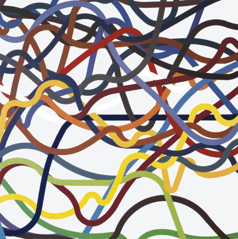

ZDENĚK SÝKORA
Der tschechische documenta-Teilnehmer Zdeněk Sýkora (1920-2011) gehörte seit Mitte der 1960er-Jahre zu den Pionieren der internationalen Computerkunst. Die in der Ausstellung zu sehenden „Linienbilder“ entstanden ab 1973 und fanden in kurzer Zeit auch international große Anerkennung. Trotz einer Basis zufälliger computergenerierter Zahlenreihen sind die konstruktivistischen Gemälde Sýkoras dennoch ganz von der Steuerung durch den Künstler durchdrungen, weshalb sie nicht ausschließlich auf den Begriff Computerkunst festzulegen sind.
System und Kraft der Linie
Bis heute zählt Sýkora zu den bedeutendsten Künstlern seines Landes und ist in Ausstellungen weltweit vertreten. Das Emil Schumacher Museum in Hagen präsentiert nun seit vielen Jahren die erste Einzelausstellung in Deutschland und setzt dabei die konkrete Malerei Sýkoras mit der gestisch expressiven Malerei Emil Schumachers in Bezug. Beide Künstler arbeiten mit dem Prinzip des Zufalls und unbedingter Freiheit. Formal gegensätzlich stehen sie einander künstlerisch überraschend nahe.
Účastník Dokument Zdeněk Sýkora (1920-2011) od poloviny šedesátých let patřil k průkopníkům mezinárodního počítačového umění. Liniové obrazy, které budou prezentovány na nadcházející výstavě, vznikaly od roku 1973 a v krátké době si získaly i velké mezinárodní uznání. I přesto, že jsou založeny na počítačem generovaných řadách náhodných čísel, jsou tyto Sýkorovy konstruktivní malby zcela řízeny umělcem, a proto je nelze zařadit výhradně pod pojem počítačové umění.
Zdeněk Sýkora patří dodnes k nejznámějším umělcům své země a je vystavován po celém světě. Muzeum Emila Schumachera v Hagenu představuje nyní po mnoha letech opět jeho samostatnou výstavu v Německu a zároveň uvádí Sýkorovu konkrétní malbu do vztahu s expresivní gestickou malbou Emila Schumachera. Oba tito umělci pracovali s principem náhody a požadavkem absolutní svobody. Ač formálně stojí ve vzájemné opozici, umělecky jsou si překvapivě blízcí.

ZDENĚK SÝKORA
SYSTEM UND KRAFT
DER LINIE
30. August 2015
bis 14. Februar 2016
SYSTEM UND KRAFT
DER LINIE